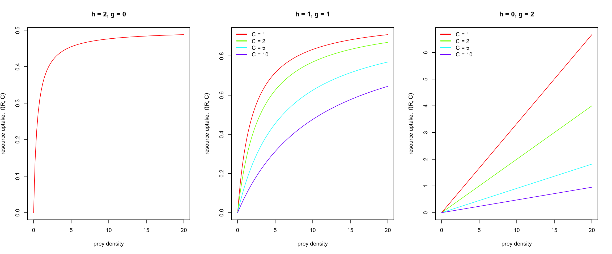

Our starting point is the Rosenzweig-MacArthur model, the last model from the previous tab. This model is based on a Holling type-II functional response. This means that the per-capita resource uptake is a saturating function of resource density, where the saturation is the result of predators spending more and more time handling prey instead of looking for new prey. We derived this functional response from first principles in Ecology D.
Let us assume that the same logic that led to the Holling type-II functional response also applies to interference competition: Each time a predator encounters another predator individual, the two predator interfere (fight) with each other for a time interval of length \(g\). Including this leads to
\[ f(N, C) = \frac{a R}{1 + a h R + a g C}. \]
This functional response is known as the Beddington-functional response. If \(g = 0\), this equation simplifies to the Holling type-II functional response. On the other hand, for \(h = 0\) we obtain a functional response based on only interference competition, resulting in a linear functional response with slope \(a / (1 + a g C)\). Hence, the rate of food uptake decreases with increasing consumer density \(C\). If \(h \neq 0 \neq g\), then the rate of food uptake is saturating in \(R\), and it saturates faster with increasing \(C\). Let us explore this function by plotting if for different predator densities \(C\).

Using this functional response, the predator prey system can be written as
\[ \begin{align} \frac{\mathrm{d}R}{\mathrm{d}t}&=Rr\bigg(1-\frac{R}{K}\bigg) - \frac{a R C}{1 + a h R + a g C}\\ \frac{\mathrm{d}C}{\mathrm{d}t}&=e \frac{a R C}{1 + a h R + a g C} - dC. \end{align} \]
To analyze this model, it is useful to first obtain the equations for the prey and predator isoclines, just as we did for the previous models. For the model with interference competition, these equations are a abit cumbersome and I give them here:
\[ \begin{align} C & = \frac{(1 + a h R)(K - R)r}{a K - a g (K - R) r} \hspace{1 cm} \text{prey isocline}\\ C & = \frac{(e - d h)}{d g} R - \frac{1}{a g} \hspace{1.55 cm} \text{predator isocline} \end{align} \]
The goal of this exercise is to investigate how interference competition affects two predictions form the Rosenzweig-MacArthur-model (RMA-model for short).
The RMA-model predicts that predation significantly reduces equilibrium prey population size. At equilibrium with predators present the resource density is given by \(R^* = d/(a(e - hd))\). This value is usually much lower than \(K\), the resource density in the absence of predation. Note, that this equilibrium density depends only on parameters of the predator. How is this prediction modified by interference competition? Does the prey species suffer or benefit from interference competition between predators? Can you sketch a bifurcation diagram showing the predator and prey equilibrium population density if the strength of interference competition (determined by the parameter \(g\)) gradually increases, either in absolute terms or relative to the length of the handling time \(h\). How bad is predation for prey populations, what do you conclude? If you were to write the next ecology text book, what would be your take-home message for the next generation of students based on this model that incorporates interference competition?
The RMA-model predicts sustained population cycles. Specifically, the equilibrium point given by the intersection of the two isoclines becomes unstable if \(K > (e + hd)/(ah(e - hd))\). If this condition is fulfilled, a never-ending predator-prey cycle is predicted. How does interference competition affect this prediction? Does it facilitate or hinder cyclic dynamics? How is the amplitude of cycles affected by interference competition?
Some thoughts about how to address these questions:
Recycle the code from the RMA-model but with updated functional response \(f(R, C)\).
Start with the parameter values form the Rosenzweig-MacArthur model from the previous tab.
You can read the equilibrium density as the last entry in the data frame that stores the timeseries generated by the function ode(). Whether or not the population cycle will be visible from the phase plane plot.
You should mostly vary three parameter, namely \(h\), \(g\), and \(K\). You vary \(h\) (the time it takes to handle a prey) and \(g\) (the time it takes to fight with another predator) to change how handling time and interference competition affect the model predictions. You can vary these parameters in many different ways, for example, you could vary both \(g\) between \(0.001\) and \(0.5\) and \(h\) from \(0.001\) to \(0.3\) in steps of \(0.1\) (you have to avoid using \(g\) and \(h\) exactly equal to \(0\) as then the formulas for the isoclines result in error messages). This would give you \(4 * 6 = 24\) parameter combinations. You vary \(K\) because increasing it makes population cycles more likely. But these are just some ideas. Do whatever you feel gives you a good understanding how these parameters affect the properties of interest!